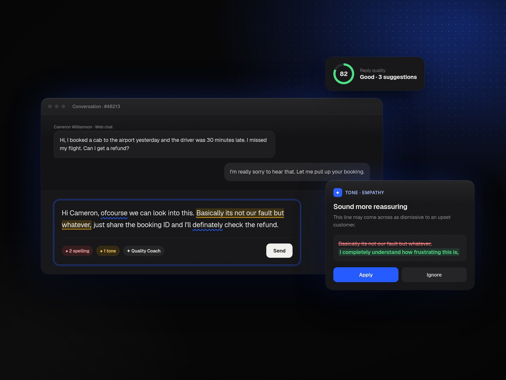

Hello, I’m Kaushik. I design. For the better.
I design. For the better.
I design products that look good and feel great to use.
Senior Product Designer · Product Thinker
Projects
2024–2025
Quick Automations
Real-time automation for conversational support in Freshdesk Omni. Guided templates that run in as little as 30 seconds across WhatsApp, web chat and social DMs.
- 91%fewer dropped chats
- $120Kattributed MRR
- 75%real-time adoption

Quality Coach
An AI coach inside the reply composer. It nudges agents on tone, grammar and clarity while they type, not after the fact.
- +18CSAT on busy shifts
- 62%fewer repeat issues
- 92%agents kept it on
Journey so far
5 yrsMultiplierNow designingSenior Product DesignerJun 2026 — Present
- Sautéing veggies, something good’s simmering…
FreshworksSenior Product DesignerSep 2022 — May 2026
- Initiated and led Quick Automations for high-intensity real-time channels, reducing agent effort during peak traffic. Read the case study →
- Led the end-to-end rollout of Freddy AI across CX products: admin experiences, onboarding flows and 5+ Copilot features like real-time translation, proactive quality coaching and context-aware reply suggestions.
- Crafted a unified experience for Freddy Insights, a conversational AI platform that gives admins actionable insights.
- Introduced omni-channel business hours across email, chat, voice and messaging, simplifying configuration for global admins.
- Defined ultra-granular SLAs, configurable down to 30 seconds, and scalable automation workflows for reply timelines across channels.
- Reworked onboarding across CX products with the Product-Led Growth team, cutting drop-off by 45% within a month.
- Managed and implemented the Freddy and Freshworks design systems for AI and CX products.
- Awards: Exceptional Individual Performer (Q3 2023) and Above and Beyond (Q3 2025).
PickyourtrailProduct DesignerNov 2021 — Aug 2022
- Solved pre- and post-booking problems in the Pickyourtrail app.
- Led design of a stealth corporate travel app, with early adoption by Chargebee and Rocketlane.
- Revamped Plato, the internal CRM used by travel and sales consultants.
In their words
From people I’ve built withWorking with Kaushik was a game-changer. He brings clarity to complex problems and turns scattered ideas into thoughtful, easy-to-use product experiences that teams and users genuinely appreciate.
Toolkit
- FigmaProduct design
- ClaudeDesign & vibe coding · Research
- ChatGPTContent design
- NotionDocumentation
- LooppanelSynthesis
- UserpilotInsights
About
Gallery of trying →Designer. Storyteller.
Forever curious.
Hey! I’m Kaushik. People call me 🐮.
I’m a Product Designer who likes turning messy problems into products that are simple, useful, and hopefully make people think, “wait, why was that so satisfying?”
I started out designing posters and visual creatives in college, mostly because I liked making things look cool. Somewhere along the way, I became more curious about why things worked, why they didn’t, and how they could work better. That curiosity pulled me into product design, and I’ve been obsessing over it ever since.
Over the years, I’ve worked across B2C and SaaS, designing products that help businesses and people get things done a little better. More recently, I’ve been exploring AI-powered products, figuring out how to make complex technology feel simpler, more intuitive, and a little more human.
When I’m not designing, you’ll probably find me behind a camera, rage-queuing Valorant, watching anime, or going down completely unnecessary rabbit holes about finance, watches, and sneakers.